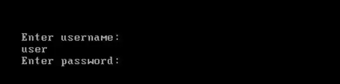
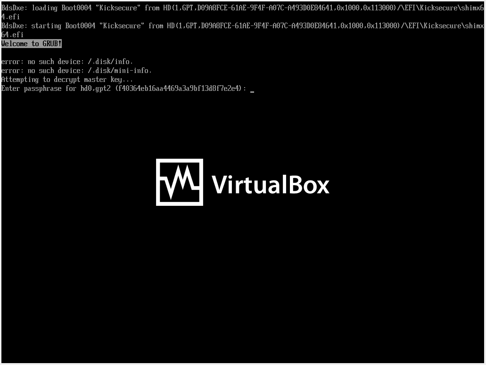
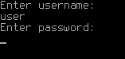

We believe security software like Kicksecure needs to remain Open Source and independent. Would you help sustain and grow the project? Learn more about our 14 year success story and maybe DONATE!
Operating System HardeningDocumentationsandbox-app-launcherPrevious page: Operating System HardeningIndex page: DocumentationNext page: sandbox-app-launcherProtection against Physical Attacks
- Default Passwords
- Passwords
- Account Management
- Login
- Login Spoofing
- Safely Use Root Commands
sysmaintAccount- System Maintenance Panel
- Unrestricted Admin Mode
- Protection against Physical Attacks
- User Account Isolation (developers)
user-sysmaint-split (developers)- Polkit (formerly PolicyKit) /
pkexec - privleap /
leaprun
BIOS Password, Problematic Interfaces, Screen Lock, Virtual Consoles, Login Screen, Side Channel Attacks
Introduction
Physical attacks require adversaries to have direct access to a user's computer and cannot be conducted remotely. This section should be read in conjunction with the Full Disk Encryption and Encrypted Images chapters.
BIOS Password
The Basic Input/Output System (BIOS) is non-volatile firmware which performs hardware initialization during computer booting after it is powered on. It also provides runtime services for operating systems and programs. BIOS in modern PCs initialize and test system hardware components, as well as loading a boot loader or operating system from a mass memory device. The Unified Extensible Firmware Interface (UEFI) is the successor to BIOS that was released in 2011. [1]
Most hardware-level settings are stored in BIOS, including power options, boot options and memory information. The BIOS menu allows the user to set and change a boot password for the computer upon startup. An administrator password can also be set to prevent others from changing BIOS settings.
- A) BIOS power-on password; and/or
- B) BIOS administrator password
To set a BIOS boot password: [2] [3]
- Turn on / restart the computer.
- Press the relevant key to access the BIOS menu. It is usually one
of:
Del,Esc,F2,F10, orF12. - Navigate to the Security or Password section using the arrow keys.
- Search for an entry named "Password on boot" or similar.
- Enter the new, strong password.
- Save the changes made to BIOS settings. On most PCs, this is done by
pressing
EscorF10→Save and Exit. Check the bottom of the BIOS screen to be sure. - Reboot the computer and confirm a password prompt now appears.
For greater security, a password should be set to access the BIOS menu itself. Search the Security or Password BIOS menu for "Set supervisor password", "User password", "System password", or something similar. [4] Also, users may prefer to configure BIOS to only allow booting from HDD/SSD so the computer cannot be booted from CD-ROM or USB flash drives.
It should be noted that this is hardware dependent. There are:
- A) Secure BIOS Password implementations: If the password has been forgotten, the motherboard might be bricked.
- B) Insecure BIOS Password implementations: On some hardware this method will only prevent casual attempts to gain access. There are numerous methods of bypassing, removing or resetting BIOS passwords. Some methods include easily available recovery modes, removal of the CMOS batteries and/or BIOS password reset jumper.
Before relying on the security of the BIOS password, the user should research the security of their motherboard's BIOS.
Note: Kicksecure
is an Implementation of the Securing Debian Manual.
Specifically the feature you're reading about here is inspired by this
chapter in the manual: Choose
a BIOS
password
Bootloader Password
Note: There are two distinct prompts in GRUB:
A) GRUB Bootloader Authentication Password Prompt (related to protecting GRUB menu and settings from unauthorized changes);
- Figure: GRUB Bootloader Authentication Password
Prompt

B) EFI BIOS or Legacy BIOS Disk Decryption Password Prompt
(related to unlocking an encrypted /boot):
- Figure: GRUB Bootloader Disk Decryption
Password Prompt (EFI)

This chapter focuses on the bootloader authentication password.
Note: The GRUB authentication password is unrelated to Full Disk Encryption.
- Purpose of a bootloader password:
- Prevent unauthorized users from editing boot parameters or accessing recovery options through the GRUB menu.
- Without a password, someone with physical access can modify boot entries to bypass security mechanisms, load an alternative kernel, or boot into single-user mode.
- Is a GRUB password useful when using FDE with encrypted
/boot?- FDE Already Protects Data: Without the FDE password, the data on the disk remains inaccessible.
- Bootloader Security is Less Critical: Since the disk is encrypted, unauthorized users cannot alter its contents or boot into the system without decrypting it first.
- Note: Due
to the less secure encryption and bad usability supported by GRUB's FDE
features, Kicksecure defaults to using FDE with
unencrypted
/boot. Installing Kicksecure with/bootencrypted requires using manual partitioning.
- When a GRUB password is useful with FDE and unencrypted
/boot:- Protect Against Physical Access Attacks: If an attacker gains physical access and can boot from external media or tamper with the GRUB menu, they might not access the encrypted data but could still cause disruptions by modifying boot files.
- When a bootloader password might be redundant:
- Dedicated Single-User FDE Systems: If you're the sole user and you physically secure your device, a GRUB password might add minimal value.
- Trusted Environment: If the system is in a trusted physical environment, the additional step of a GRUB password could be unnecessary.
- virtual machines (VM):
- Physically protected hosts: Unnecessary.
- Physically unprotected hosts: In scenarios where physical access to the VM's host system is possible, a GRUB password can serve as an additional layer of protection against tampering with boot settings. However, administrators or attackers with access to the hypervisor can bypass the GRUB password by mounting the virtual disk and editing configuration files directly.
- Servers:
- Servers are often managed remotely, and GRUB passwords require manual input during boot. This makes them impractical for systems that rely on automated reboots or remote administration since physical presence is required to enter the password.
A GRUB bootloader password is not critically important if you're already using full disk encryption, but it can provide an additional layer of security in specific scenarios when physical access is a concern. Assess your threat model and decide accordingly.
While a GRUB password can mitigate some physical attacks, it won't protect against many others.
- Boot from Other Devices: Attackers can boot from a USB drive, CD, or network (PXE boot) to bypass the system's internal bootloader entirely. A BIOS password might make attacks that rely on this strategy more difficult or impossible.
- Disk Removal: Removing the disk and connecting it to another computer allows the attacker to bypass GRUB altogether. If the disk is not encrypted, the attacker has unrestricted access to all data.
- Tampering with Hardware or Firmware: Attackers can flash the firmware (e.g. BIOS/UEFI) to introduce malicious code, effectively bypassing GRUB entirely or compromising the system during boot.
- Others: Listed on this wiki page.
How to set a bootloader password
Select an option.
grub-pwchange
1 Prerequisite knowledge: Bootloader Password
2 Information.
grub-pwchange is a GRUB bootloader password management
tool for systems with only one human user. It supports:
- Setting an encrypted bootloader password by creating GRUB account
userand storing it in file/etc/grub.d/44_password. (Then runningsudo update-grub.) - Deleting the bootloader password by removing
/etc/grub.d/44_password. - It configures GRUB to always require a password at boot for all actions.
grub-pwchange does NOT handle:
Advanced GRUB features not supported by
grub-pwchange:
- Multiple GRUB user accounts
- Fine-grained permissions to allow boot into user session without
password but require a password to:
- edit kernel cmdline;
- boot into sysmaint session;
- boot older kernels;
- recovery mode,
- have not been implemented yet.
- Changing manually set GRUB passwords not managed by this tool
Advanced use should be configured manually.
For developer information, see footnote. [5]
3 Exercise.
Before using this in production, it's best to test this in a safe environment such as on another computer or inside a virtual machine. This is because if the GRUB bootloader password is wrong, there are bugs or other issues (such as with keyboard layout), you might lock yourself out and require Recovery.
It is also recommended to practice how to disable the GRUB bootloader
password using a recovery boot medium, for example by booting from ISO
and editing /boot/grub/grub.cfg to disable the GRUB
bootloader password.
4 Usage.
sudo grub-pwchange
5 Password prompt.
You'll be prompted to enter a password.
- To set the password: Type a password.
- To disable the GRUB bootloader password: Keep it empty, simply press enter.
Figure: GRUB bootloader password prompt

(We plan to update this screenshot to say "user".)
6 You'll be prompted to enter the same password again for verification.
- To set the password: Type the same password.
- To disable the GRUB bootloader password: Keep it empty, simply press enter.
7 Result.
Read the output of grub-pwchange. It will most likely
report success.
/usr/sbin/grub-pwchange: SUCCESS: GRUB bootloader password for GRUB account 'user' was set successfully in '/etc/grub.d/44_password'.In case of issues, contact Support.
8 Reboot.
9 After selecting a boot option at GRUB boot menu, the user will be prompted for a username and password.
- username:
user - password: The password that you have set using
grub-pwchange.
After entering the username, press enter. You'll be prompted for the password. After typing the password and pressing enter, the system should boot. If you're back to the GRUB boot menu, then either the username or password was typed incorrectly. There could also be issues with the keyboard layout.
The username is always user. [6]
10 Done.
The GRUB bootloader password has been configured.
Simple
This is the simplest way to set a GRUB password, assuming the user is
named user and has root access. Using this method,
all GRUB/boot menu entries will be locked behind
a username and password.
1 Make sure grub-common is installed.
sudo apt update && sudo apt install grub-common
2 Run the Grub password generator grub-mkpasswd-pbkdf2 and enter the desired password that you wish to use.
grub-mkpasswd-pbkdf2
3 The output will look similar to the following: (copy the part starting with grub.pbkdf2.sha512.10000.)
PBKDF2 hash of your password is grub.pbkdf2.sha512.10000.
4
Open the custom GRUB configuration file at
/etc/grub.d/40_custom (using a text editor like nano).
sudo nano /etc/grub.d/40_custom
5 Add the necessary lines to the file, including the copied grub.pbkdf2.sha512.10000. along with the username of the machine (which is user in our case).
set superusers="user" password_pbkdf2 user grub.pbkdf2.sha512.10000.<hashed-password>
6 Save and exit the file, then update GRUB to apply the changes.
sudo update-grub
7
Reboot. A prompt should appear if you press the e key,
Esc, or if you want to run Kicksecure from the boot menu,
asking for a username and password.
8 Done.
The GRUB bootloader password has been configured.
Advanced
Separate root and user
Hide the Ability to Edit Entries
This is undocumented.
Disable GRUB to show advanced entries (like recovery mode)
This is undocumented.
See also: GRUB
Note: Kicksecure
is an Implementation of the Securing Debian Manual.
Specifically the feature you're reading about here is inspired by this
chapter in the manual: Set
a (...) GRUB
password
Cold Boot Attacks
Check Cold Boot Attack Defense Section.
Evil Maid Attack
Check Anti Evil Maid Section.
Problematic Interfaces
There are a number of computer interfaces that pose the risk of a direct memory access (DMA) attack. Potentially exploitable interfaces include ExpressCard, PCMCIA, FireWire, PCI, PCI Express or Thunderbolt.
 High-speed expansion ports allow attackers to penetrate computers and
other peripherals because the connected devices have direct hardware
access to enable maximum throughput.
High-speed expansion ports allow attackers to penetrate computers and
other peripherals because the connected devices have direct hardware
access to enable maximum throughput.
In practice, attached devices are permitted to read and write directly to memory, often without supervision of the operating system. This is in contrast to user-mode applications that are usually prevented from accessing memory locations that are not explicitly authorized by virtual memory controllers. [7]
A successful DMA attack on an unattended, live computer allows the adversary to: [8] [7] [9] [10]
- Access sensitive cryptographic material in memory.
- Circumvent FDE.
- Inject executable code.
- Partially or fully read the memory address space.
- Read documents, files or other digital traces present in memory.
- Take control of the entire system, for example via the network.
- Unlock screensavers without a passphrase.
DMA attack software tools which mimic the abilities of state-level adversaries are even available on GitHub! [11] Mitigating the threat of a DMA attack requires mostly physical security countermeasures; it is recommended to:
- Consider blocking or removing dangerous ports completely.
- Disable them in BIOS or UEFI.
- Never allow unknown and potentially malicious devices to be inserted into these ports. [12]
- Securely configure these interfaces.
- Use IOMMU technology if available, along with software which supports it, like Qubes. [13]
- Use Linux kernel options to disable DMA by Firewire devices. Package security-misc is installed by default and implements this, see also package description.
Screen Lock
 If a computer is left unattended, always lock the screen of the host or
shut it down for greater security.
If a computer is left unattended, always lock the screen of the host or
shut it down for greater security.
Locking the screen on the host prevents others from viewing or using the device. It is advisable to configure the screen to lock after a period of inactivity, and a strong password is recommended.
- X11: Be aware that screen lockers provide notoriously weak protection, especially under X11. Do not overestimate their effectiveness. [14]
- Wayland: Screen locking under Wayland is theoretically more secure since the system will not unlock if the screen locker crashes, nor can sensitive information be easily displayed on top of the lock screen. [15]
To manually lock the screen: [16] [17]
Linux:
Menu panel→Lock Screen.- Shortcuts vary depending on the desktop environment in use, such as GNOME, KDE, LXQt, and others.
Recommendations:
- If using X11, do not enable
Alt + Ctrl + Backspaceto kill the X Server. Do not disableDontZapin the Xorg configuration. [18] [19]
Notes:
- In Kicksecure 18 and higher, the default screenlocker is Swaylock. Swaylock does not display a password prompt while the lock screen is active, and does not provide a traditional text box showing the length of the currently entered password. The lock screen is currently configured to look like the default wallpaper background. To unlock, type your password and press Enter. A circular indicator will appear on the screen to provide simple visual feedback as each character of the password is typed.
Sleep Mode
Best avoided unless a screen lock is being used. See also above.
Virtual Consoles

Linux allows you to access a text-only user interface to the system
by pressing a key combo like Ctrl+Alt+F1, Ctrl+Alt+F2, etc. These
virtual consoles are not locked by the GUI screen locker, and do not
automatically time out. If you use virtual consoles for any reason, you
should always run exit to log out of the virtual console
immediately after you are done using it. It's also advisable to check
all virtual consoles and log out of them before leaving the system
unattended. [18] [20]
See also:
Login Screen

Host versus VMs:
- Host operating system: A login screen can be useful if the user wants to require a password in order to log in to the system.
- VMs: It is not very useful to enable a login screen inside VMs. If the host operating system (OS) is ever compromised, then any VMs it hosts are also effectively compromised. Therefore, if anything, it is much better to lock the host screen. See also Screen Lock.
Note:
- Login, yes: A login screen only protects the login.
- Encryption, no: A login screen does not provide Full Disk Encryption (FDE)!
A login screen can be provided by a login manager. For example, greetd + wlgreet is the login manager used by default in Kicksecure.
Kicksecure is configured by default to autologin. Hence, no login screen will be shown by default.
To enable a login screen in Kicksecure, it is required to disable autologin. For instructions on how to do that, see disable autologin.
See also: Login
Side Channel Attacks
 Kicksecure does not provide protection against most side-channel
attacks.
Kicksecure does not provide protection against most side-channel
attacks.
Side-channel attacks are made possible by physical effects caused by cryptosystem operations (on the side) which provide extra information about system secrets like cryptographic keys, state information, or full/partial plaintexts. Wikipedia defines side-channel attacks as: [21]
...any attack based on information gained from the physical implementation of a cryptosystem, rather than brute force or theoretical weaknesses in the algorithms (compare cryptanalysis). For example, timing information, power consumption, electromagnetic leaks or even sound can provide an extra source of information, which can be exploited to break the system.
Side-channels emerge because computation takes place on a non-ideal system, composed of transistors, wires, power supplies, memory, and peripherals. Component characteristics vary with the instructions and data that are processed, allowing measurable variance to be used by attackers. [22]
Attack Class |
Description |
|---|---|
Acoustic Cryptanalysis |
Sound produced during computation is used for attacks. |
Cache Attacks |
Attackers monitor cache accesses made by the user in shared physical systems like virtualized environments or cloud services. |
Data Remanence |
Sensitive data are read after supposedly being deleted. |
Differential Fault Analysis |
Secrets are discovered by introducing faults in a computation. |
Electromagnetic Attacks |
Leaked electromagnetic radiation allows attacks that can provide plaintexts and other information. Cryptographic keys can be inferred via this method; for example, see TEMPEST. |
Optical |
Secrets and sensitive data are read by visual recordings with a high resolution camera, or other devices. |
Power-monitoring Attacks |
Attacks use measurements of varying hardware power consumption during computation. |
Software-initiated Fault Attacks |
Row hammer is an example of this attack, whereby off-limits memory is changed by rapidly accessing adjacent memory, leading to state retention loss. |
Timing Attacks |
Attacks are based on measuring how long various computations take to perform, such as the attacker's password compared to the user's unknown one. |
While Kicksecure has tools related to side-channel attacks (security-misc; tirdad; sdwdate), in general it cannot provide protection against most classes, nor hardware keyloggers, TEMPEST, miniature cameras, laser microphones and so on. Full disk encryption is also helpless against these attacks.
For further reading on this complex topic, see here, here and here.
Hardware-based Tampering Protection
Many attacks are possible if a sufficiently sophisticated attacker is able to probe, modify, or directly access hardware interfaces inside a device. Many devices used within modern systems assume that they are operating in a trusted environment and thus make no or very little effort to secure or validate the origin of signals they send and receive. This means that if an attacker is able to sniff these signals or inject their own signals into the system, they can potentially compromise the machine and gain access to sensitive data such as encryption keys. This video provides a good overview of an attack on a TPM chip that uses hardware tampering. The equipment necessary to carry out these attacks is not always expensive or difficult to use.
Hardware-based tampering protection mechanisms attempt to detect when an attacker is tampering with the system, taking immediate measures to report or prevent the attack. These kinds of protections are generally integrated into computer hardware as part of the device, though there are exceptions. If your computer supports tampering protection, it will likely allow you to configure this protection in the BIOS settings. The exact steps to take to enable tampering protection will depend on your hardware.
Some examples of tampering protection mechanisms:
- Enterprise-grade Dell hardware (e.g., Optiplex and Latitude
machines) often features a chassis intrusion
switch that detects when the side panel is removed from the machine.
- Depending on the machine, this switch may be configured to:
- Log intrusion events in the BIOS.
- Beep very loudly when the machine is opened.
- Prevent the system from booting until an intrusion warning is cleared by an authorized user.
- A determined attacker may bypass the switch by cutting the cover open rather than removing it normally.
- Depending on the machine, this switch may be configured to:
- Some HP machines include a feature called TamperLock, which is similar to a chassis intrusion switch. In addition to blocking boot, TamperLock can clear the system's TPM when the cover is opened.
- The ORWL physically secure computer used a special wire mesh to detect any attempt to physically access the motherboard (including drilling or cutting the outer cover). When detected, the system would immediately wipe an internal encryption key used to protect the internal solid-state drive. ORWL machines are no longer produced.
- The PHYSEC SEAL is a miniature radar device that can detect and report when a device is tampered with.
Malicious Hardware Modifications
Hardware implants.
Hardware Replacement or Modification: Attackers could replace
hardware components, such as the keyboard, to capture passwords or
encryption keys, bypassing the need for GRUB, /boot
partition tampering by sniffing full disk decryption passwords.
External:
Internal:
See Also
Footnotes
- https://en.wikipedia.org/wiki/BIOS
- https://web.archive.org/web/20220803213740/https://www.techwalla.com/articles/how-to-change-the-administrator-password-in-bios
- https://web.archive.org/web/20210430031204/https://www.intowindows.com/how-to-set-bios-or-uefi-password-in-windows-10/
- If the system has both a supervisor password and a user password, then set passwords for both.
- Results in GRUB configuration file
/boot/grub/grub.cfgto be appended with: sudo cat /boot/grub/grub.cfg zZmwstaticVERBATIMzZ0zZ - This is hardcoded in the
grub-pwchangescript. - https://en.wikipedia.org/wiki/DMA_attack
- https://louwrentius.com/firewire-the-forgotten-security-risk.html
- https://privatecore.com/resources-overview/physical-memory-attacks/index.html
- https://web.archive.org/web/20170427144955/https://www.delaat.net/rp/2011-2012/p14/report.pdf
- This is not an endorsement for the use of hacking tools.
- This is another reason why high-risk users should never leave their devices unattended.
- IOMMU maps device-visible virtual addresses to physical addresses. The security benefit is that devices that are passed through to guest virtualized machines -- AppVMs in Qubes -- are unable to access the host's physical memory. This makes DMA attacks against the host very difficult and can lead to memory corruption if attempted. Qubes OS automatically uses device passthrough to isolate USB controllers and network devices from the host, thus helping prevent these and other attacks. An IOMMU may also prevent DMA attacks from host devices (not passed through to a VM), although this is not necessarily guaranteed to work in all situations. See https://security.stackexchange.com/questions/176503/dma-attacks-despite-iommu-isolation
- Attacks that have bypassed screen lockers on most platforms can easily be found online.
- See also Wayland, Session Lock.
- https://www.isunshare.com/windows-10/3-ways-to-lock-windows-10-computer.html
- https://swissmacuser.ch/new-lock-screen-feature-in-macos-high-sierra/
- https://forums.whonix.org/t/screen-locker-in-security-can-we-disable-these-at-least-4-backdoors/8128
- Quote from
xscreensaver FAQ:
Backdoor #1: Ctrl-Alt-Backspace This keystroke kills the X server, and on some systems, leaves you at a text console. If the user launched X11 manually, that text console will still be logged in. [...]
- Quote
xscreensaver FAQ:
Backdoor #2: Ctrl-Alt-F1, Ctrl-Alt-F2, etc. These keystrokes will switch to a different virtual console, while leaving the console that X11 is running on locked. If you left a shell logged in on another virtual console, it is unprotected. So don't leave yourself logged in on other consoles. You can disable VT switching globally and permanently by setting DontVTSwitch in your xorg.conf, but that might make your system harder to use.
- https://en.wikipedia.org/wiki/Side-channel_attack
- http://rootlabs.com/articles/IEEE_SideChannelAttacks.pdf
License
Kicksecure Protection Against Physical Attacks wiki page Copyright (C) Amnesia
Kicksecure Protection Against Physical Attacks wiki page Copyright (C) 2012 - 2026 ENCRYPTED SUPPORT LLC <adrelanos(at)kicksecure.com(Replace(at)with@.)Please DO NOT use e-mail for one of the following reasons:Private Contact: Please avoid e-mail whenever possible. (Private Communications Policy)User Support Questions: No. (See Support.)Leaks Submissions: No. (No Leaks Policy)Sponsored posts: No.Paid links: No.SEO reviews: No.Advertisement deals: No.Default application installation: No. (Default Application Policy)>This program comes with ABSOLUTELY NO WARRANTY; for details see the wiki source code.
This is free software, and you are welcome to redistribute it under certain conditions; see the wiki source code for details.
Categories: Documentation